소개
한글화는 기본판과 같고, 그 위에 게임 규칙을 다시 짰습니다. 원작에서는 화면에 보이는 무용·병법·국정·모략이 실제 계산에 거의 쓰이지 않았습니다. 이 판에서는 네 능력치가 전투와 내정에 직접 들어가고, 값도 원작과 삼국지14를 섞어 다시 매겼습니다.
일기토 부상, 궁술 일제 사격, 모계 간파·적중 같은 전투 연출을 새로 넣었습니다. 관직마다 역할이 다르고, 도시가 늘수록 한 계절에 할 수 있는 일도 늘어납니다.
한글화와 「유비의 꿈」 시나리오만 넣은 기본판은 따로 있습니다. 두 판은 서로 다른 롬이라 세이브를 섞어 쓰지 마세요.
- 원제
- 天地を喰らう 三国志群雄伝
- 기종
- 슈퍼패미컴
- 발매
- 1995년 8월 11일 · 캡콤
- 장르
- 시뮬레이션
- 원작
- 모토미야 히로시 『천지를 먹다』
한눈에 보기
| 시나리오 | 도원(195) · 적벽(208) · 삼국(214) + 새 시나리오 「진삼국」(214) |
|---|---|
| 장수 | 추가 장수 50명(새 초상), 주유·방통·서서 되살림 |
| 능력치 | 원작 40% + 삼국지14 60%를 섞어 다시 매김 (1~15) |
| 전투 | 무용·병법·모략이 피해와 사기에 반영, 군단장 병법이 턴 보너스 행동력, 일기토 부상, 일제 사격, 계략 간파·적중 |
| 내정 | 국정이 내정에 반영, 관직별 재정 가중치, 행동 횟수 최대 12 |
시나리오
새 시나리오 「진삼국」
214년 「삼국」을 바탕으로 장수를 대폭 늘리고 형세를 바꾼 시나리오입니다.
| 형주 | 유비 땅. 1군단 방통(총대장)·관우·관평·관흥·관색·관은병. 원래 형주의 조조군 6명은 남양으로 |
|---|---|
| 파서 | 2군단 서서(총대장)·왕평·엄안·곽준·장억, 1군단 방희 |
| 강하 | 주유를 되살려 1군단 총대장(도독)으로 |
| 유비군 | 군단에 속한 장수의 시작 병력 최소 4 |
| 추가 장수 | 50명, 모두 새 초상. 소속 세력의 도시 군단에 배치하고, 214년에 15세 미만이거나 소속이 없던 인물은 재야로 |
추가 장수 50명
| 위 | 조창·조휴·장패·여건·장기·신비·진군·장제·사마부·문흠·관구검·왕기·왕이 |
|---|---|
| 오 | 손상향·진무·주치·여대·보즐·감택·고옹·손소·하제·유찬·장온·육항 |
| 촉 | 진도·간옹·미방·유파·이회·곽준·장억·오의·동윤·곽익·나헌·관색·제갈첨·마운록·관은병 |
| 남만·기타 | 축융·사마가·올돌골·목록대왕·대래동주·금환삼결·아회남·동다나·장연·초선 |
능력치
- 무용·병법·국정·모략 = 원작 값 40% + 삼국지14 환산 60%를 섞어 반올림 (1~15). 모든 시나리오에 적용됩니다.
- 삼국지14 환산은 순위 구간 방식입니다: 상위 1%가 15, 3% 14, 7% 13, 11% 12, 15% 11 … 하위 5%가 1.
- 무용 ← 무력, 국정 ← 정치, 모략 ← 지력, 병법 ← 지력 80% + 통솔 20%. 무력 90 이상은 병법 최소 8.
- 개별 지정: 조운·마초 무용 14, 황충 무용 13, 곽가 병법 13.
- 삼국지14에 없는 장수는 원작에서 같은 값이던 장수들의 새 값을 기준으로 정했습니다.
- 전투·내정에 쓰이는 원작의 숨은 등급도 삼국지14의 통솔·지력·정치에 맞춰 다시 정했습니다.
예 (무용 / 병법 / 국정 / 모략)
| 여포 | 15 / 6 / 2 / 2 |
|---|---|
| 관우 | 14 / 8 / 6 / 6 |
| 조운 | 14 / 8 / 6 / 7 |
| 제갈량 | 3 / 15 / 15 / 15 |
| 사마의 | 3 / 14 / 13 / 14 |
| 방통 | 2 / 13 / 12 / 15 |
| 주유 | 7 / 13 / 9 / 12 |
| 조조 | 7 / 12 / 11 / 11 |
전투
| 행동력 | 부대마다 턴당 3점 + 진영 보너스. 보너스는 군단장 병법으로 정해집니다(병법 14~15 → 6, 12~13 → 5, 10~11 → 4, 8~9 → 3, 6~7 → 2, 4~5 → 1, 0~3 → 0). |
|---|---|
| 일반 공격 | 병력 손실에 무용 ÷ 3 (최대 5)을 반영합니다. |
| 근접전 사기 | (내 병법 + 무용) − (상대 병법 + 무용) 차이를 사기 피해에 더합니다. 능력 차가 크면 한쪽이 크게 밀립니다. |
| 출진 사기 | 신뢰 + 기본값 + 관직 보너스(부장·교위 1 … 대장 5) + 병법 ÷ 5(최대 3). 상한 47. |
| 일기토 | 2단계 비교에 무용을 그대로 씁니다(무용 14와 12가 확실히 갈림). 모계 특기 장수의 자동 회피는 무용 10 미만일 때만. |
| 일기토 부상 | 이긴 쪽 무용이 3·4·5·6 이상 높으면 25·50·75·100% 확률로 부상. 패자 사기 피해 16~18, 「○○ 부상을 입고 물러나다!」. 패자 사기가 부상 피해 이하면 보통 처리. |
| 계략 | 성공·저항과 모계 부대 공격에 모략을 씁니다. |
| 간파 | 받는 쪽 모략이 4 이상 높으면 확률로 계략이 무효, 거는 쪽 사기 −6~8. 「○○ 계략을 간파하다!」 |
| 적중 | 거는 쪽 모략이 4 이상 높으면 확률로 병력 손실 +1. 「계략이 적중했다!」 |
| 궁술 | 점수 = 쏘는 장수 무용 ÷ 5(최대 3) + 궁술 특기 보너스 − 주사위, 맞는 쪽 무용 ÷ 5만큼 줄어듭니다. |
| 일제 사격 | 바로 옆 칸 아군 대장이 궁술 특기면 병력 손실 +2. 「○○와 일제 사격!」 |
| 자동전투 | 군주가 없는 군단·AI끼리의 전투는 병법으로 판정하고, 플레이어 쪽에만 있던 −3점 불이익을 없앴습니다. |
| 퇴각 불가 | 퇴각할 성이 없는 군단장은 사망하지 않고 그 도시에 재야로 남습니다. 군주는 원작대로 처리합니다. |
내정·운영
| 행동 횟수 | 계절마다 도시 수 + 1 (최대 12). 행동 아이콘은 반칸까지 표시(아이콘 1개 = 2회). |
|---|---|
| 내정 계수 | 태수·재·민심·쌀 소비 계산에 국정을 씁니다. |
| 재정 | 재 증가를 군단 수로 나누지 않습니다. 부하 관직별 가중치: 관리·대부 2, 장사·상서·중랑 3, 상령·태위·사공·사도 4, 승상 5, 태수 2. |
| 민심 | 계절마다 오르는 폭을 키웠습니다(계수 ÷ 2 → 계수). |
| 병력 회복 | 무관 병력 회복 2배를 모든 도시에 적용(원래는 군주와 같은 도시만). |
| 재야 등용 | 재야 장수 등용 이벤트가 더 자주 일어납니다. |
한글화 범위
- 게임 대사 전체 (반칸 공백으로 띄어쓰기)
- 장수·도시·관직 이름, 장수 상세 화면, 군단정보 능력 줄(무·법·정·모·병)
- 성내 명령 메뉴 전체, 의견·정보·군단정보·군단편성 화면, 관위 창 제목
- 전투 화면: 전투 명령 메뉴, 상태창, 「사기」「성」 그림 글자
- 타이틀: 로고 「천지를 먹다」, 부제 「삼국지 군웅전」, 처음부터/이어하기, 오른쪽 위 버전 표시
- 시나리오·난이도·군주 인장, 「목표선택」「세력선택」, 저장 화면 「저장」「뒤로」
- 지도 깃발, 연도·계절 표시, 관직 도장, 예/아니오, 대사 속 「나」「근위군」, 전투 결과 「중립군」
공격 맞대결 화면의 「士気」 그림 글자는 아직 원문입니다. 인사·외교의 깊은 단계, 엔딩·이벤트 화면은 다 확인하지 못했습니다.
화면
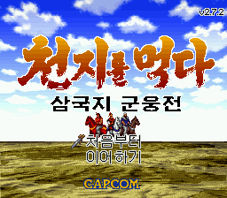
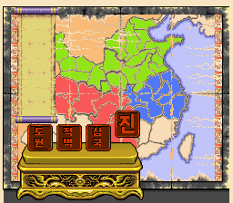
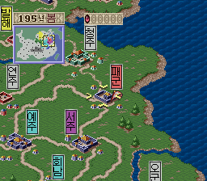
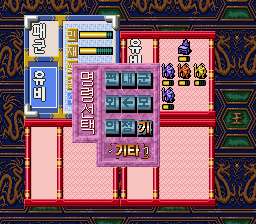
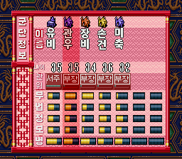
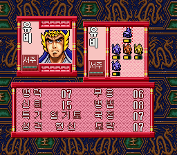
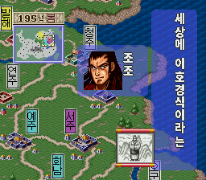
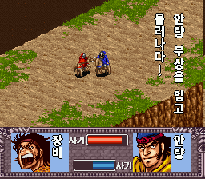
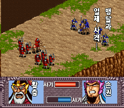
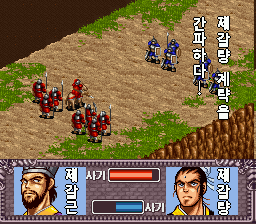
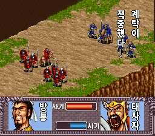
적용 방법
원본 롬 준비
일본판 「天地を喰らう 三国志群雄伝」 롬(헤더 없음, 1.5MB, SHA-1
5bdc878ec9346b285fe0707f85c9013d2aac9b4a)을 준비합니다. 512바이트 헤더가 붙은 롬이면 헤더를 떼어 주세요.패치 받기
아래 버튼으로 IPS 패치(v2.7.2)를 받습니다.
패치 적용
웹에서는 RomPatcher.js, PC에서는 Floating IPS로 적용합니다. 결과 롬은 2MB입니다.
실행
Snes9x 같은 슈퍼패미컴 에뮬레이터에서 실행합니다. 타이틀 오른쪽 위에 v2.7.2가 보이면 성공입니다. 기본판 세이브와는 섞어 쓰지 마세요.
버전 기록
- 성을 모두 잃은 세력 때문에 계절이 넘어가지 않고 이벤트만 반복되던 버그 수정 (이미 그 상태인 세이브도 진행됨)
- 전투 턴 보너스 행동력을 군단장 병법으로 계산 (문관 군단장이 최고치가 되던 문제)
- 군단정보 화면 국정 줄 이름 「공」 → 「정」
- 시나리오를 도원·적벽·삼국·진삼국 4개로 정리
- 타이틀 로고 「천지를 먹다」, 전투 상태창 「사기」「성」 한글화
- 모계 적중 효과를 병력 손실 +1로
- 궁술 피해에 맞는 장수 무용 반영
- 일기토 부상이 원작 퇴장·전멸 판정과 겹치지 않게
- 모계 적중 문구를 짧게 표시
- 일기토 부상
- 궁술 일제 사격, 모계 간파·적중
- 삼국지14 기반 능력치, 새 시나리오 「진삼국」, 추가 장수 50명
- 주유·방통·서서 되살림, 진삼국 형주를 유비 땅으로
- 능력치 환산 조정(최종: 원작 40% + 삼국지14 60%)
- 퇴각 불가 군단장 재야 처리, 자동전투 병법 판정·불이익 제거
- 남은 일본어 그래픽·문자열 한글화(관위·저장·목표선택·세력선택·중립군)
- 전투·내정에 무용·국정·병법·모략 반영
- 관직 차별화(재정·출진 사기)
- 행동 횟수 최대 12, 반칸 아이콘
- 타이틀 버전 표시
- 한글화(대사·메뉴·전투·지도·타이틀 메뉴·인장 등), 대사 띄어쓰기
게임 안 한글 글꼴: Noto Sans CJK, 갈무리(Galmuri) — 둘 다 SIL Open Font License. 삼국지14 능력치 값은 참고용으로만 썼습니다.